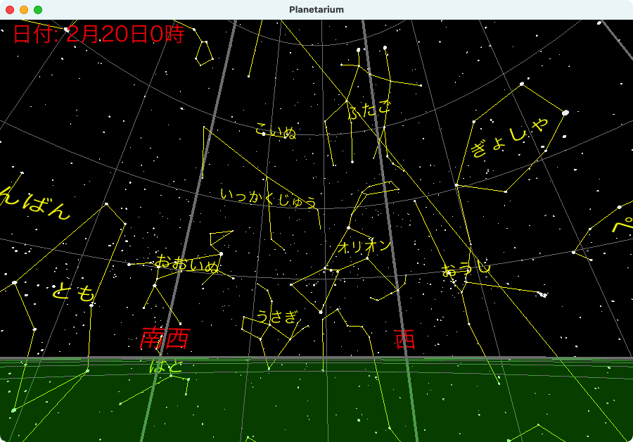

日経ソフトウエア記事「Pythonでプラネタリウムを作る」で使用する恒星データ、星座線データを公開します。これらのデータは、記事の著者が作成したもので、著作権フリーで公開しています。

視等級6.5以上の恒星を8789個を収録。赤緯：符号が0のとき、赤緯：度、赤緯：分、赤緯：秒の３つの角度をマイナスにします。
| 列 | 説明 |
|---|---|
| 1 | HIP番号：1～120416 |
| 2 | 赤経：時（整数） |
| 3 | 赤経：分（整数） |
| 4 | 赤経：秒（小数） |
| 5 | 赤緯：符号（0：- 1：+） |
| 6 | 赤緯：度（整数） |
| 7 | 赤緯：分（整数） |
| 8 | 赤緯：秒（小数） |
| 9 | 視等級：等級（小数） |
Stellariumの星座線データを元に作成した676行のデータ。2つののHIP番号を使って、恒星を繋ぐ星座線を描きます。
| 列 | 説明 |
|---|---|
| 1 | 星座：略符 |
| 2 | HIP番号 |
| 3 | HIP番号 |
星座線上の恒星データ692行を収録。星座線データとペアで使用することで、星座線を描ける。赤緯：度がマイナスのときは、赤緯：分、赤緯：秒にもマイナス符号をつける必要がある。
| 列 | 説明 |
|---|---|
| 1 | HIP番号 |
| 2 | 赤経：時（整数） |
| 3 | 赤経：分（整数） |
| 4 | 赤経：秒（小数） |
| 5 | 赤緯：度（整数） |
| 6 | 赤緯：分（整数） |
| 7 | 赤緯：秒（小数） |
| 8 | 視等級：等級（小数） |
| 9 | 年周視差（ミリ秒角） |
| 10 | 赤経方向固有運動（ミリ秒角／年） |
| 11 | 赤緯方向固有運動（ミリ秒角／年） |
| 12 | B-V色指数 |
| 13 | V-I色指数 |
| 14 | スペクトル分類 |
データの作成方法はREADME.mdを参照してください。